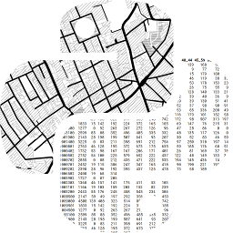

Geographic Data Science with Python
1 Home

1.1 Geographic Data Science with Python

You can buy a physical copy of this book here.
1.2 Introduction
This book provides the tools, the methods, and the theory to meet the challenges of contemporary data science applied to geographic problems and data. Social media, new forms of data, and new computational techniques are revolutionizing social science. In the new world of pervasive, large, frequent, and rapid data, we have new opportunities to understand and analyze the role of geography in everyday life. This book provides the first comprehensive curriculum in geographic data science.
Geographic data is ubiquitous. On the whole, social processes, physical contexts, and individual behaviors show striking regularity in their geographic patterns, structures, and spacing. As data relating to these systems grows in scope, intensity, and depth, it becomes more important to extract meaningful insights from common geographical properties like location, but also how to leverage geographical relations between data that are less commonly-seen in standard data science.
This book introduces a new way of thinking about analysis. Using geographical and computational reasoning, it shows the reader how to unlock new insights hidden within data. The book is structured around the excellent data science environment available in Python, providing examples and worked analyses for the reader to replicate, adapt, extend, and improve.
1.3 Motivation
1.3.1 Why this book?
Writing a book like this is a major undertaking, and this suggests the authors must have some intrinsic motivations for taking on such a task. We do. Each of the authors is an active participant in both open source development of spatial analytical tools and academic geographic science. Through our research and teaching, we have come to recognize a need for a book to fill the niche that sits at the intersection of GIS/Geography and the world of Data Science. We have seen the explosion of interest in all things Data Science on the one hand and, on the other, the longer standing and continued evolution of GIScience. This book represents our attempt at helping to emerge the intersection between these two fields. It is at that common ground where we believe the intellectual and methodological magic occurs.
1.3.2 Who is this for?
In writing the book, we envisaged two communities of readers who we want to bring together. The first are GIScientists and geographers who may be wondering what all the fuss is about Data Science, and questioning whether they should engage with the methods, tools, and practices of this new field. Our response to such a reader is an emphatic “Yes!”. We see so much to be gained and contributed by geographers who enter these new waters. The second community we have held in mind in writing this material are data scientists who are beginning to turn their attention to working with geographical data. Here we have encountered members of the data science community who are wondering what is so special about geographical data and problems. Data science currently has an impressive array of models and methods, surely these are all that geographers need? Our response to these questions is “No! There is a need for new forms of data science when working with geospatial data.” Moreover, we see the collaboration between these two communities as critical to the development of these new advances.
We also recognize that neither of these two communities is a monolithic whole, but are in fact composed of individuals from different sectors, academic science, industry, public sector, and independent researchers, as well as at different career stages. We hope this book provides material that will be of interest to all of these readers.
1.3.3 What this book isn’t
Having described our motivation and intended audience for the book, we find it useful to also point out what the book is not. First, we do not intend the work to be viewed as a GIS starter for data scientists. A number of excellent titles are available that serve that role, such as the Introduction to Python for Geographic Data Analysis book by Tenkanen, Heikinheimo, and Whipp in this very series (pythongis.org). Second, in a similar sense the book is not an introduction to Python programming for GIScientists like that offered by Ningchuan Xiao’s fantastic GIS Algorithms, among other offerings. Finally, we have consciously chosen breadth over depth in the selection of our topics. Each of the topics we cover are active areas of research of which our treatment should be viewed as providing an entry point to more advanced study. As the admonition goes:
“A couple of months in the laboratory can frequently save a couple of hours in the library.” (Frank Westheimer1)
Speaking to our intended audiences, geographers new to data science and data scientists new to geography, we hope our book serves as a metaphorical library.
1.4 The Content and Purpose of this Book
Every book reflects a combination of the authors’ perspectives and the social and technological context in which the authors write. Thus, we see this book as a core component of the project of codifying what a geographic data science does and, in turn, what kinds of knowledge are important for aspiring geographic data scientists. We also see the medium and method of writing this book as important for its purpose. Hence, let’s discuss first the content, then the purpose of our medium and message.
1.4.1 What we included
This book delves throughly into a few core topics. From our background as academic geographers, we seek to present concepts in a more geographic way than a standard textbook on data science. This means that we cover spatial data, mapping, and spatial statistics right off the bat, and talk at length about some concepts (such as clusters or outliers) as geographic concepts. We know that this can, in some cases, be confusing for readers who are familiar with these terms as they’re used in data science. But, as we hope is shown throughout the book, the difference in language and framing is superficial, while the concepts are foundational to both perspectives.
With that in mind, we discuss the central data structures and representations in geographic data science, and then move immediately to visualization and analysis of geographic data. We use descriptive spatial statistics that summarize the structure of maps in order to build the intuition of how spatial thinking can be embedded in data science problems. For the analysis sections, we opt for a presentation of a classic subject in spatial analysis -inequality-, and then pivot to discussing important methods across geographic analysis, such as those that help understand when points are clustered in space, when geographic regions are latent within data, and when geographical spillovers are present in standard supervised learning approaches. The book closes with a discussion of how to use spatial principles to improve your typical analytical workflows.
1.4.2 What we did not include
Despite the “breadth over depth” approach we take in this book, there are many topics that we omit in our treatment. Every book must exhibit some kind of editorial discipline, and we use three principles to inform our own.
First, we sought to avoid topics that get “too complicated too quickly”; instead, we sought to maximize the benefit to a casual reader by focusing on simple but meaningful methods of analysis. This precludes many of the interesting but more complex topics and methods, like Bayesian inference or generative models (like cellular automata or agent-based models). We felt that GeoAI developments at the cutting edge of quantitative geographic analysis are also a bit too complex for this treatment. Further, geographical problems of scale and uncertainty fall in this category, since these questions generally pose issues that demand theoretical, not empirical, solutions that are specific to the analytical task at hand. We expect this list to change as methods in geographical analysis and data science get simpler and better.
Second, we tried to pick topics that did not have contemporary treatment in computational teaching. This includes spatial optimization problems (such as location allocation or coverage problems) as well as the generative and geostatistical models mentioned above. With this book, we are trying to cover areas where we see a clear opportunity in (re)framing them in new ways for the benefit of the two communities we mention above. Where there is already a wheel, we have not reinvented it.
Third, we admit that we chose topics that are intellectually adjacent to our own experiences and training in quantitative geography. The world of spatial statistics is vast, and very deep, but any one person only gains so much perspective on it. Thus, our backgrounds strongly informed our decisions of what to cover in the second and third sections, where we generally avoid more complex methods like Gaussian Process (geostatistical) models or geospatial knowledge graph methods. We would like to emphasise that this omission is not based on approaches’ merits, which we recognise, but on our own ability to present them clearly, honestly, and effectively.
Altogether, these three editorial principles help keep this book focused precisely on the set of techniques we think give readers the most benefit in the shortest space. It covers both methods to summarize and describe geographical pattern, correct analysis for the artefacts induced by geographical structure, and leverage geographical relationships to do data analysis better.
1.4.3 Why we wrote an “open” book
In addition to the content included (or omitted) from the book, we strongly feel that writing this book as we have—online in public using computational notebooks—provides a novel and distinctive utility for our readers. Thus, the book is open in the sense that the book is hosted freely online and replicable, since we try to show the reader all of the code and analytical steps required to generate the outputs we discuss. And, although chapters often start with pre-cleaned datasets, we also include the cleaning code in online supplemental material so that interested readers can see. In addition, nearly every graphic has its code included in the book, and is developed directly within the narrative of the book itself. This approach helps illustrate a few things.
First, this approach facilitates learning and teaching. Geographic Data Science is a new field, but has many academic influences and precursors. Currently, textbooks in this space either include no code, or they separate the discussion of the content from the code. When code is not included in a book, students looking to apply new methods (or teachers of these methods) have to cobble together bits of unrelated code in documentation or StackOverflow and also write new code to combine various packages in the Python data science ecosystem. In contrast, this book provides all the code necessary to repeat the analytical stories we tell. We hope that this both improves the usefulness of this book for readers who can follow along with each step of the computation, and also for people more interested in code examples than reading. Second, by including the code directly within the text, we also make the connection between code and idea more clear. This provides learners with the narrative scaffolding around code that learners need to see in order to integrate their own code with analytical writing. Third, this method of presentation shows how tightly-coupled the ideas we present are to their actual implementation in code. Analytical techniques are only useful when they help someone do something they could not otherwise. Code is now the main way that analytical techniques are made real, and thus useful, to people. And now, new analytical techniques are often informed by the programming environments in which they are implemented. So, we made sure to keep these very tightly integrated to reinforce their reciprocal relationship.
The fact that code and analysis are so tightly coupled also presents some unique challenges for learners. For example, there are many computational hurdles over which students must jump before ever starting the first example of many introductory textbooks. These might include installing a software environment, configuring the environment in a similar fashion to the book’s, and executing the code correctly. Because solutions to these issues change frequently and can be different from person to person, books often do not address these issues. This leaves students stranded at the starting block. Our book provides a full view of Geographic Data Science, from setting up and organizing computational environments to preparing data, through to developing novel spatial insight and presenting it cogently to others. We hope this makes it possible for students to start from scratch, rather than having to have extensive experience in setting up computational environments. However, coding experience will certainly help get the most out of the book as a whole.
Finally, we recognize that preparing a book in a fundamentally interactive medium does change both the nature and the tenor of the content being presented. Books are (usually) not mutable in the same sense as a computational notebook: they can’t be changed and re-compiled by the reader. But, this also changes how we present content, in that we explicitly provide code cells for the reader to change and re-run. This kind of exploration-driven presentation could be mimicked by more static presentation methods, but we think that this approach provides a much clearer “on-ramp” for developing independent use, thought, and reasoning about these techniques.
1.5 The book in the future
In this section, we consider some of the main trends that have shaped the conception of the book. As mentioned, every project like this is in part a reflection of the time in which it is conceived and created. In our case, this “era effect” has had both very tangible ramifications, as well as other ones that, though perhaps less visible at first, signal mayor shifts of the ground on which geographic data science stands. Some of them are unequivocally positive, others more of a price to pay to be able to develop a project like this one.
Starting with the obvious (but powerful): writing the book in the way we have done is possible. This is a statement we would have not been able to make a mere ten years ago. What you are holding in your hands (or displaying on your laptop) is an academic textbook released under an open license, entirely based on open technology, and using a platform that treats both narrative and code as first-class citizens. It is as much a book as a software artifact, and its form embodies many of the principles that inspire its content.
Though possible, the process has not been straightforward. Many of the technologies we rely on heavily were just available when we started writing back in 2018. Computational notebooks were stable by then, but ways of combining them and using them as the building block of long-form writing were not. In particular, this book owes much of its current form to two projects, jupyterbook and jupytext, which make it possible to build complex documents starting from Jupyter notebooks and to mirror their content to other formats such as markdown, respectively. Both projects were in their early days when we adopted them and, using them in production at the same time they were being developed into a stable shape has not been without its challenges. But this has also reminded us the very best of the open-source ethos: their teams have been a phenomenal example of how a an open, fast-paced project can bring together a community around it. Although many of the changes broke things constantly, clear documentation, signposting, and responsiveness to our questions made it all possible.
In effect, not only infrastructure-wise, the wider landscape of Python for geographic data science evolves very fast. Our scientific stack has changed significantly over the period of writing. New packages appear, existing ones change, and some also loose support and maintenance to a point that they are unusable. Writing a book that tries to set up the main tool set in this context is challenging. In some ways, by the time this book is in print, some of its parts will be outdated or even obsolete. We think this is a problem, albeit a small and good one. It is small because the core value proposition of the book is not as a technical guide teaching a set of specific computational tools. It is rather a companion to help you think geographically when you work with modern data, and get the most of state-of-the-art data technologies when you work with geographic problems. It is also a good problem to have, because it is sign that the ecosystem is constantly getting better. New packages only become significant if they do more, better, or both than the existing ones. At any rate, this constantly and rapidly changing context made us think more thoroughly about the computational infrastructure and, over time, we learned to take it more as a feature rather than a bug (it also inspired us to write Chapter 2!).
Besides technical challenges, creating a textbook based on notebooks has also unearthed more conceptual aspects we had not anticipated. Writing computational notebooks is qualitatively different from writing a traditional textbook. As discussed before, the writing process changes when you weave code and narrative, and that takes additional effort and explicit design choices. Furthermore, we wanted this book’s content be available online as a free website, so we were effectively catering to both print and the web in the same document. This often meant tricky tradeoff’s and, sometimes, settling for a (smaller) common shared subset of options and functionality. All in all, this book has taught us in very practical ways that the medium often frames the message, and that we were exploring a lesser-known medium that has its own rules.
Finally, we believe the book was written at an inflection point where the computational landscape for data science and GISc has left its previous steady state, but it is not quite clear yet what the new one fully looks like. Perhaps, as the famous William Gibson’s quote goes, the “future is already here - it’s just not evenly distributed”. Scientific computing is open by default and, more and more, very interoperable. Tooling to work with such stack, from low-level components to the end-user, has improved enormously and continues to do so. At the same time, we think some of these changes bring about more substantial shifts that we have not fully accommodated yet. As we mention above, we have only scratched the surface of what new media like computational notebooks allow, and much of the social infrastructure around science (e.g., publishing) has been largely detached from these changes. With this book, we hope to demonstrate what is already possible in this new world, but also “nudge the way” for the uneven bits of the future that are still not here. We hope you enjoy it and inspires you to further nudge away!
Crampon, Jean E. 1988. Murphy, Parkinson, and Peter: Laws for librarians. Library Journal 113. no. 17 (October 15), p. 41.↩︎